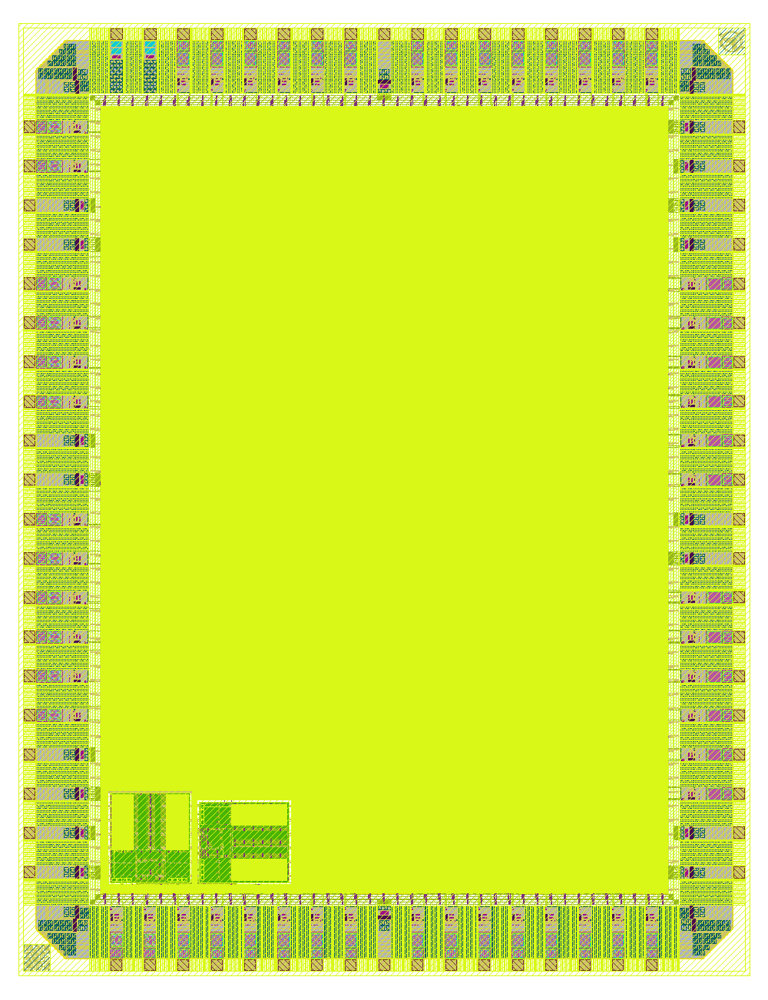

LibreLane + Docker in practice — from Verilog source to a manufacturable mask set in one command.
Presenter
Mauricio Montanares
Scientist, IHP
Date
2026·04·22
Deck
40 slides · 6 parts
Objectives2 / 38
What you will learn
What RTL-to-GDS means end-to-end, and where LibreLane sits in the flow.
How to get the full toolchain running in one Docker command.
How to configure LibreLane for a GF180MCU full-chip design — the config.yaml anatomy.
How to run the flow and read DRC / LVS / timing signoff.
Prerequisites
linux-host · any modern distribution
docker · engine + user in docker group
disk ≥ 40 GB · image + run artifacts
No prior EDA knowledge assumed.
Agenda3 / 38
Six parts, roughly five minutes each
01The RTL-to-GDS pipeline
02The stack, the container, the PDK
03LibreLane config — the heart of the flow
04Running the flow
05Flow stages up close
06Results, pitfalls, and next steps
40 slides~30 min1 live demo
Part 01 / 06
The RTL-to-GDS pipeline
What are we automating, and where does LibreLane sit in the stack?
Part 1 · The pipeline5 / 38
RTL and GDS — two ends of the same pipeline
Behaviour
RTL
A text description of a circuit in Verilog / SystemVerilog.
Says what the circuit does.
Geometry
GDS · GDSII
A binary layout file — every polygon on every layer.
What the foundry turns into masks.
RTL → GDS = automating the path from one to the other.
Part 1 · The pipeline6 / 38
The pipeline, at a glance
Each stage writes a milestone artifact; any stage can halt the flow.
Part 1 · The pipeline7 / 38
LibreLane is the conductor, not the orchestra
LibreLane is an EDA tool whose job is to orchestrate other EDA tools. It reads one configuration file and, for each stage, calls the open-source tool that does the specialised work:
Yosys — RTL → gate-level netlist.
OpenROAD — floorplan, PDN, placement, CTS, routing, STA, IR drop.
Magic — GDS streamout and DRC.
KLayout — DRC cross-check, antenna, XOR, renders.
Netgen — LVS (layout vs schematic).
An EDA conductor — it decides which tool runs, when, and with what inputs.
Part 1 · The pipeline8 / 38
What you get at the end
A successful flow run hands you:
final/gds/chip_top.gds
the layout
final/def/
routed netlist + placement
final/lib/
extracted timing libraries
final/spef/
parasitics for post-layout STA
final/sdf/
back-annotation for gate-level sim
metrics.csv
one row per metric.

Final GDS rendered by KLayout — chip_top.gds, 3.93 × 5.12 mm, padring + 2 SRAMs + core.
Part 02 / 06
The stack, the container, the PDK
Five open-source tools + LibreLane as orchestrator, one container, one set of foundry files.
Part 2 · Stack10 / 38
The full stack in one picture
The CLI is literally librelane config.yaml.
Everything below the top box does the actual EDA work; LibreLane reads the config,
sequences the tools, passes files between them, and writes one metrics.csv.
Part 2 · Container11 / 38
Host, container, and your files
The container is the environment; the bind-mount is the bridge — edits on the host appear instantly inside.
Part 2 · Container12 / 38
Container bootstrap — three commands (plus cleanup)
# 1. One-time image pull (~15 GB)
docker pull hpretl/iic-osic-tools:next# 2. Start a long-running, headless container
docker run -d --name gf180 \
-v ~/eda/designs:/foss/designs:rw \
--user $(id -u):$(id -g) \
hpretl/iic-osic-tools:next --skip sleep infinity
# 3. (Optional) interactive shell for debugging
docker exec -it gf180 bash
# 4. Non-interactive use (what the rest of the deck does)
docker exec gf180 bash -lc '<command>'
Why these flags
-v binds your host workspace
--user artifacts owned by the right UID
--skip sleep infinity do-nothing entrypoint
Cleanup
docker stop gf180
docker rm gf180
Host files untouched.
Part 2 · PDK13 / 38
GF180MCU — two gotchas to know upfront
Gotcha 01
The full-chip template needs the wafer-space PDK fork
Upstream open_pdksgf180mcuD is missing two I/O cells the padring depends on — gf180mcu_ws_io__dvdd, …__dvss. Clone the fork.
The image defaults to IHP SG13G2. Without this line, LibreLane looks for sg13g2_stdcell files inside the GF180 directory and stops on a Tcl glob error.
Two YAML files for the wafer-space template, one for Classic. This is where most of the thinking happens.
Part 3 · Config15 / 38
Three hardening stages — what belongs where
For CHIPATON 2026 the organisers hand you one die area and a fixed padring. Your job is to put a working chip inside it — three distinct hardening stages, and confusing them is the #1 source of lost days.
01
Macro hardening
Your block → reusable IP
Each custom block (CPU, accelerator, analog wrapper) is hardened on its own.
Flow
meta.flow: Classic
Produces
block.gds · .lef · .lib · blackbox.v
Hands-on
demo/rtl2gds_counter.ipynb
02
Macro integration
Wire the IP into config.yaml
Every stage-01 block becomes a black-box macro with four views plus an absolute (x, y, orient).
Not a step —
a declaration LibreLane reads.
Hands-on
demo/rtl2gds_chip_top_custom.ipynb
03
Full-chip hardening
Template → chip_top.gds
LibreLane drops each macro at its declared location, routes glue logic, and signs off the chip.
Flow
meta.flow: Chip
Produces
chip_top.gds (the submission)
Hands-on
demo/rtl2gds_chipathon_use.ipynb
Rest of Part 3 walks stage 02 (the YAML wiring) and stage 03 (what the full-chip flow needs).
Part 3 · Config16 / 38
The project template — files you actually touch
The YAML below is LibreLane's input. LibreLane parses it and hands the relevant pieces to Yosys, OpenROAD, Magic, KLayout, and Netgen.
Plus a Makefile that wraps librelane in make librelane.
Part 3 · Config17 / 38
LibreLane v3 YAML — two levels, one command
The full-chip flow reads two YAML files: a stable design-level config and a swappable floorplan-level slot. If a key appears in both, the rightmost file's value overrides the leftmost — that's how one slot file can retarget the same design to a different die.
Companion: demo/00_slots_explained.ipynb walks the concept;
demo/rtl2gds_chipathon_padring.ipynb builds a new slot from scratch.
Selects the full-chip padring flow (vs the smaller Classic used for bare-die blocks).
CLOCK_PORT vs CLOCK_NET
CLOCK_PORT is the external pad.
CLOCK_NET is the internal net after the pad's buffer.
Define both — or CTS skews from the pad input and you get sad timing at the core.
Distance between neighbouring straps. Larger = less metal, higher IR drop.
Core ring
The loop of wide power wires around the standard-cell area that delivers current from the pads to the straps.
Defaults pass IR-drop for the reference design. Scale up? Shrink pitch or widen straps; PDNSim will flag violations at signoff.
Part 3 · Config20 / 38
config.yaml — declaring macros (stage 02)
This is macro integration: the full-chip flow needs a declaration of every hard block sitting on the die — SRAMs shipped with the PDK and any custom block you hardened yourself in stage 01. No placement algorithm runs on these; you pin them.
PINNED ON THE FLOORPLANmanual coords — no algorithm runs
Where the four views come from
PDK SRAMs come pre-packaged under pdk_dir::. Your stage-01 blocks ship their own four-view set from runs/<tag>/final/.
Worked example: demo/rtl2gds_chip_top_custom.ipynb.
instances: pin absolutely
Each instance gets an absolute micron coordinate + orientation (N · S · E · W + flipped FN · FE) — manual, so nothing collides with the padring.
Part 3 · Config21 / 38
The slot_*.yaml — CHIPATON's die contract
A slot is just a named floorplan: die rectangle, core rectangle, pad order. The template ships three sizes from wafer-space's shuttle — but the mechanism is generic. For CHIPATON 2026, the organisers tell you the die area and the padring; that becomes your slot.
What a slot file actually contains
DIE_AREA— outer, incl. sealring
CORE_AREA— stdcells only
PAD_*— I/O cells, clockwise
Change the slot → change the die. Everything in config.yaml stays the same.
Pre-made: 2935×2935 µm, mirror of JuanMoya/padring_gf180. 60 analog + 20 bidir + 4/4 power + clk/rst + 1 spare input. DRC-clean validated (2026-04-23).
Anatomy → demo/rtl2gds_chipathon_padring.ipynb
Use with your RTL → demo/rtl2gds_chipathon_use.ipynb
Part 04 / 06
Running the flow
One command, five tools, eight to twelve minutes, one GDS.
Part 4 · Running23 / 38
LibreLane drivingYosys → OpenROAD → M+K+N
The one command
# from the host, one line:
docker exec gf180 bash -lc \
'cd /foss/designs/my-chip && make librelane'# what the Makefile actually runs, unwrapped:source sak-pdk-script.sh gf180mcuD gf180mcu_fd_sc_mcu7t5v0 && \
librelane librelane/slots/slot_1x1.yaml librelane/config.yaml \
--pdk gf180mcuD --pdk-root $PDK_ROOT --manual-pdk \
--run-tag $(date +%Y%m%d_%H%M%S)
--run-tag
Timestamped directory under runs/. Never overwrites — compare any two side by side.
Runtime
~8-12 min on a modern laptop (reference design, no SRAM). Routing dominates.
Same invocation, notebook form: demo/rtl2gds_chipathon_use.ipynb — flip RUN_FLOW = True in Step 0 to execute.
Part 4 · Running24 / 38
What a run leaves behind
runs/20260422_143210/
├── config.json# merged, resolved config — reproducibility
├── resolved.json# after all macro / pad expansions
├── metrics.csv# ← the CI oracle (one row per metric)
├── final/
│ ├── gds/chip_top.gds
│ ├── def/chip_top.def
│ ├── lib/ sdf/ spef/ nl/ …
│ └── metrics.csv # same as above, copy for tarball
└── NN-step_name/# one dir per flow step, in order
├── 01-Verilator.Lint/
├── 02-Yosys.JsonHeader/
├── 03-Yosys.Synthesis/
├── ..
├── 38-OpenROAD.IRDropReport/
├── 42-Magic.StreamOut/
├── 44-KLayout.XOR/
└── 46-Netgen.LVS/
Every step has its own directory with tool logs (openroad.log, yosys.log), the input DEF, the output DEF, and a per-step state_out.json. If something fails, you know exactly where to look.
Part 4 · Running25 / 38
metrics.csv — the single source of truth
One row per metric. Numbers, strings, and booleans — the final line is what a CI job greps.
key
value
meaning
design__die__area
2.01e7
um²
design__instance__count
84 417
std cells — reference run (chip_top on GF180)
timing__setup__ws
3.47
worst setup slack (ns) — >0 = pass
timing__hold__ws
0.12
worst hold slack
magic__drc_error__count
0
must be 0
klayout__drc_error__count
0
must be 0
design__lvs_error__count
0
must be 0
antenna__violating__nets
0
must be 0
CI policy, one line: awk -F, '$2>0 && /error_count/ {exit 1}' metrics.csv
Part 05 / 06
Signoff & verification
Seven checks between "routed" and "taped out" — every one must read zero.
Does every polygon obey the foundry's geometry rules?
XOR
KLayout (Magic vs KLayout GDS)
Do the two GDS streams match exactly, shape for shape?
LVS
Netgen
Does the layout's extracted netlist match the synthesized Verilog?
RCX
OpenRCX (inside OpenROAD)
What are the real parasitics? Feeds STA and IR.
STA
OpenSTA (inside OpenROAD)
Does the circuit meet timing across all 9 corners?
IR
PDNSim (inside OpenROAD)
Does the power grid stay within spec under load?
Antenna
OpenROAD.RepairAntennas
Will any long metal-only net damage a gate during etch?
Pass all seven with zero errors → the GDS is ready for the foundry. Three disclosed warnings (slew, cap) are acceptable if bounded.
YosysOpenROADMagic + KLayout + Netgen
Part 5 · Signoff28 / 38
LibreLane drivingNetgen
LVS — does the layout actually match the circuit?
A mismatched net means the routing really did connect the wrong pins — a bug the foundry cannot fix. This must be exactly zero.
Part 5 · Signoff29 / 38
LibreLane drivingOpenSTA (inside OpenROAD)
STA — nine corners, two slack numbers
Static Timing Analysis runs once per PVT corner — Process, Voltage, Temperature. LibreLane runs nine on GF180 (3 PVT × 3 parasitic extraction corners from OpenRCX). The five that break first:
Corner
Process
Voltage
Temperature
What breaks first
tt_025C_5v00
typical
5.00 V
25 °C
reference / sanity
ss_125C_4v50
slow-slow
4.50 V
125 °C
setup
ff_n40C_5v50
fast-fast
5.50 V
−40 °C
hold
ss_n40C_4v50
slow-slow
4.50 V
−40 °C
setup edge
ff_125C_5v50
fast-fast
5.50 V
125 °C
hold edge
Plus 4 more from the cross-product with typ/min/max RC extraction. Zero violations required across all nine.
Setup (slow corner)
Signal must arrive before the next clock edge. Negative slack here = clock too fast or path too long.
Hold (fast corner)
Signal must stay stable long enough after the clock edge. Negative hold slack = a race. LibreLane fixes these by auto-inserting buffers.
Part 5 · Signoff30 / 38
LibreLane drivingOpenROAD.RepairAntennas
Antenna — the one nobody expects
During back-end-of-line metal etch, the wafer sits in a plasma. Exposed metal segments collect ions and build up voltage before the upper layers that would drain them are laid down.
If a partially-built net ends only at a transistor gate, the thin gate oxide takes the stress — and breaks down.
OpenROAD computes the antenna ratio — exposed metal area ÷ gate area — per net, per layer.
Fix = tap a protection diode to the net near the gate. Under stress it conducts and bleeds charge to the substrate.
LibreLane runs this automatically in OpenROAD.RepairAntennas.
The metric to watch
antenna__violating__nets = 0
After repair, every net that touched a gate oxide passes the PDK's area-ratio rule.
Why this check exists
Etch happens before the via chain to upper metals closes. A too-long partial net is an antenna — diodes bleed charge to the substrate through a reverse-biased n+/p-sub junction.
Before repair → After repair
metal
via / poly gate
n+ diode / diffusion
p-substrate
Part 06 / 06
The chip, in numbers
What a clean signoff looks like — and the four traps that burn the first run.
Part 6 · The finished chip32 / 38
Headline numbers — the reference run
Everything below comes straight from runs/<tag>/final/metrics.csv after one clean LibreLane pass on the GF180 chip_top reference design.
Geometry
Die
3.93 × 5.12 mm
Core
3.05 × 4.24 mm
Core util.
10.45 %
Macros
4
Pads
58
Instances & timing
Std cells
84 417
Total
251 615
Wirelength
153.5 mm
Clock
40 ns / 25 MHz
Power (tt)
34.3 mW
chip_top.gds · KLayout
One die, two SRAMs, 58 pads, four macros — all from one YAML pair and onelibrelane invocation.
A chip is manufacturable when this table is all zeros. Two warnings are honest to disclose; they are not failures.
Check
Tool
Count
Notes
Magic DRC
Magic
0
Geometry rules on the final GDS.
KLayout DRC
KLayout
0
Independent cross-check — two tools, same verdict.
KLayout XOR (Magic vs KLayout)
KLayout
0
Two GDS streams, pixel-exact match.
KLayout antenna / density
KLayout
0
Fill + charge rules.
Magic illegal overlap
Magic
0
No shape-on-shape conflicts.
Netgen LVS
Netgen
0
Layout graph ≡ schematic graph.
Setup / hold, all 9 STA corners
OpenSTA
0 / 0
Parasitics from OpenRCX, 3 extraction × 3 PVT.
Routing DRC
TritonRoute
0
Internal router rule check.
IR drop
PDNSim
0
Power grid within spec.
Max slew warnings
OpenSTA · ss corner
3
Disclosed — non-critical nets.
Max cap warnings
OpenSTA · all corners
100–103
Disclosed — bounded, tracked.
Part 6 · The finished chip34 / 38
Reading metrics.csv in one grep
The whole signoff table is nine columns of one CSV. One regex pulls the rows you care about; CI diffs them on every push.
# One line that answers "is the chip still clean?"
grep -E '^(magic__drc|klayout__drc|lvs|timing__(setup|hold)_vio__count$|design__(violations|die__area|instance__count)|power__total)' \
runs/latest/final/metrics.csv
Commit a trimmed metrics.csv as the regression baseline. On every push, CI runs the flow, greps the same lines, and diffs against the baseline. Any non-zero row fails the job.
The CSV is the oracle. No dashboards. No queries. One grep, one diff, one verdict.
Part 6 · The finished chip35 / 38
Four pitfalls — and the one-line fix for each
01
Wrong PDK active
Error mentions sg13g2_stdcell (IHP) while you are targeting GF180.